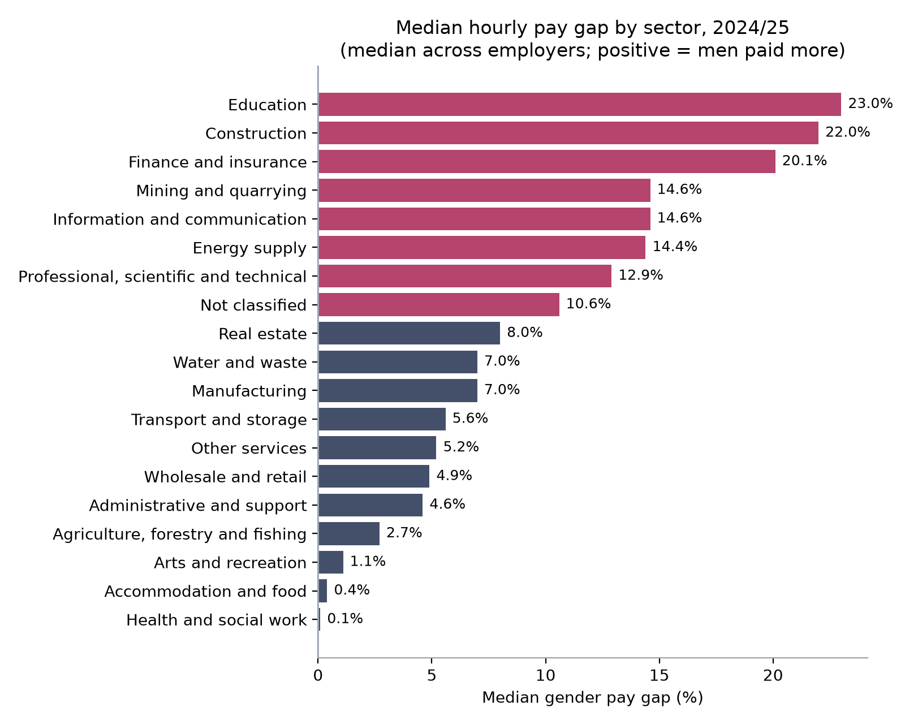
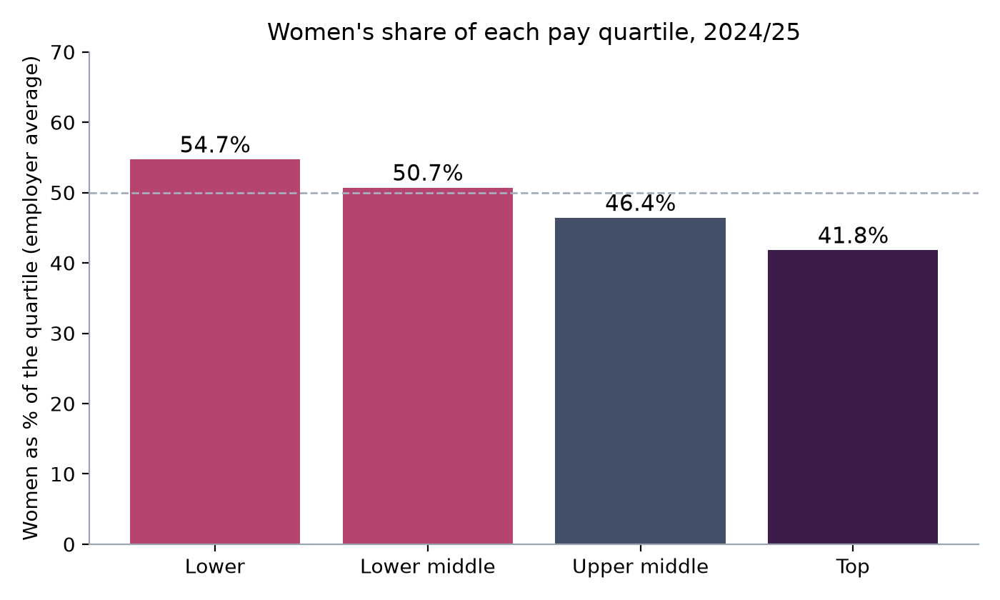
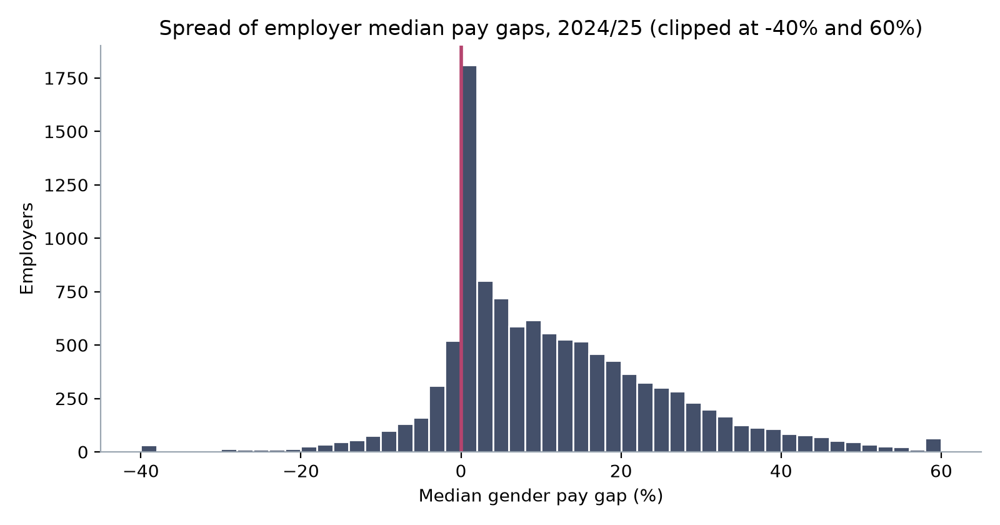

Why this matters
Employers in Great Britain with 250 or more employees must publish their gender pay gap each year. HR and reward teams are asked to explain their own figures, benchmark them against their sector and show progress. This project builds that benchmark from the full public dataset so an employer's number can be read in context.
Data and preparation
Two downloads from the Gender Pay Gap Service: reporting year 2023/24 (snapshot April 2023, deadline April 2024) and 2024/25 (snapshot April 2024, deadline April 2025). Each row is one employer's submission, with the mean and median hourly pay gaps, bonus gaps, the share of men and women receiving a bonus, and the share of women in each pay quartile.
- Gap conventionA positive figure means men's hourly pay is higher. A gap of 8.4% means women earn 8.4p less per £1 at the median.
- SectorEmployers list SIC 2007 codes. The first code was mapped to its section (for example 85 = Education). 987 employers are listed as public sector bodies and 925 gave no code; these sit in "Not classified".
- Size bandTaken as reported. The "Not Provided" band is excluded from the size comparison.
- Year-on-yearEmployers were matched on
EmployerId; 10,585 reported in both years.
SQL explained
Python loads both files into one SQLite table, gpg, with a year column. All analysis is in sql/analysis.sql.
Median with window functions
WITH ranked AS (
SELECT section, median_gap,
ROW_NUMBER() OVER (PARTITION BY section ORDER BY median_gap) AS rn,
COUNT(*) OVER (PARTITION BY section) AS n
FROM gpg_clean WHERE year = '2024/25'
)
SELECT section, MAX(n) AS employers,
AVG(CASE WHEN rn IN ((n + 1) / 2, (n + 2) / 2) THEN median_gap END) AS median_gap
FROM ranked GROUP BY section HAVING MAX(n) >= 50;SQLite has no MEDIAN function. Each employer is ranked within its sector, and the middle row (or the average of the two middle rows) is kept. The median is used instead of the average because a few employers report extreme gaps that would pull an average.
Sector lookup
CREATE TABLE sic_section (div_from INTEGER, div_to INTEGER, section TEXT);
-- (85, 85, 'Education'), (64, 66, 'Finance and insurance'), ...
CREATE VIEW gpg_clean AS
SELECT g.*, COALESCE(s.section, 'Not classified') AS section
FROM gpg g
LEFT JOIN sic_section s ON g.sic_division BETWEEN s.div_from AND s.div_to;A range join maps the two-digit SIC division to its section, so the lookup stays readable and easy to check.
Same employers, two years
SELECT a.employer_id, a.median_gap AS gap_2324, b.median_gap AS gap_2425
FROM gpg_clean a JOIN gpg_clean b
ON a.employer_id = b.employer_id
AND a.year = '2023/24' AND b.year = '2024/25';A self-join compares each employer with itself, which avoids mixing up real change with changes in who reported.
Findings

Education, construction and finance each have a typical gap above 20%, more than double the national figure.
- Education (23.0%) has a high gap despite a mostly female workforce, largely because women hold most lower-paid support roles in schools and academy trusts.
- Construction (22.0%) and finance (20.1%) have fewer women in senior and technical roles.
- Health and social work (0.1%), hospitality (0.4%) and arts (1.1%) have gaps close to zero, in sectors where many roles are paid at similar rates.

Women's share falls at every step up the pay structure, by about 13 points from bottom to top. This pattern explains most of the headline gap.
| Employer size | Employers | Median gap |
|---|---|---|
| Less than 250 | 473 | 4.6% |
| 250 to 499 | 4,898 | 9.1% |
| 500 to 999 | 2,901 | 9.2% |
| 1,000 to 4,999 | 2,431 | 7.4% |
| 5,000 to 19,999 | 543 | 7.2% |
| 20,000 or more | 69 | 5.5% |
- Mid-sized employers (250 to 999 staff) have the widest gaps. The largest employers are lower at 5.5%, although only 69 are in that band.
- Of the 10,585 employers that reported in both years, 51.2% narrowed their gap and 41.4% widened it. The median change was only 0.1 points, so progress is slow.
- Among employers paying bonuses to both men and women, the median bonus gap is 14.3%, even though similar shares of men (38.2%) and women (37.5%) receive one.
- Late submissions fell from 7.6% to 6.8% of employers.

Limitations
- The data is self-reported by employers and is not audited. Some figures will contain errors.
- A pay gap is not the same as unequal pay for equal work. It measures average pay across the whole organisation.
- Sector is based on each employer's first SIC code, which may not describe the whole business.
- Sector and size medians treat each employer equally regardless of headcount, so they describe the typical employer, not the typical employee. ONS figures for the whole workforce will differ.
Recommendations for an HR team
- Benchmark against your own sector and size band, not the national figure. An 18% gap is close to typical in finance and very high in retail.
- Report the quartile split alongside the headline gap. Movement of women into the upper quartiles is the clearest sign of real progress.
- Break the gap down internally by grade, function and working pattern to find where it comes from before choosing actions.
- Review bonus design, since bonus gaps are wider than pay gaps even when men and women receive bonuses at similar rates.
- Track promotion and hiring rates by gender each quarter, as these drive next year's quartile figures.
How to reproduce it
- Download the 2023/24 and 2024/25 CSV files from the Gender Pay Gap Service into
gender-pay-gap/data/. - Run
python python/run_analysis.py. It loads the data into SQLite, runs every query insql/analysis.sql, and saves the charts andoutputs/results.json.